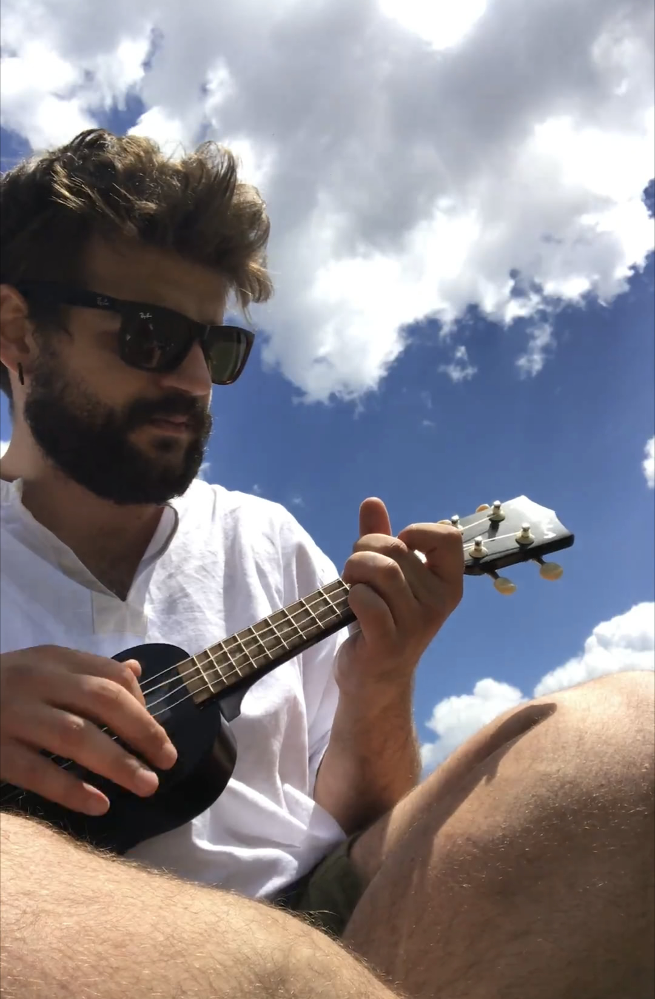
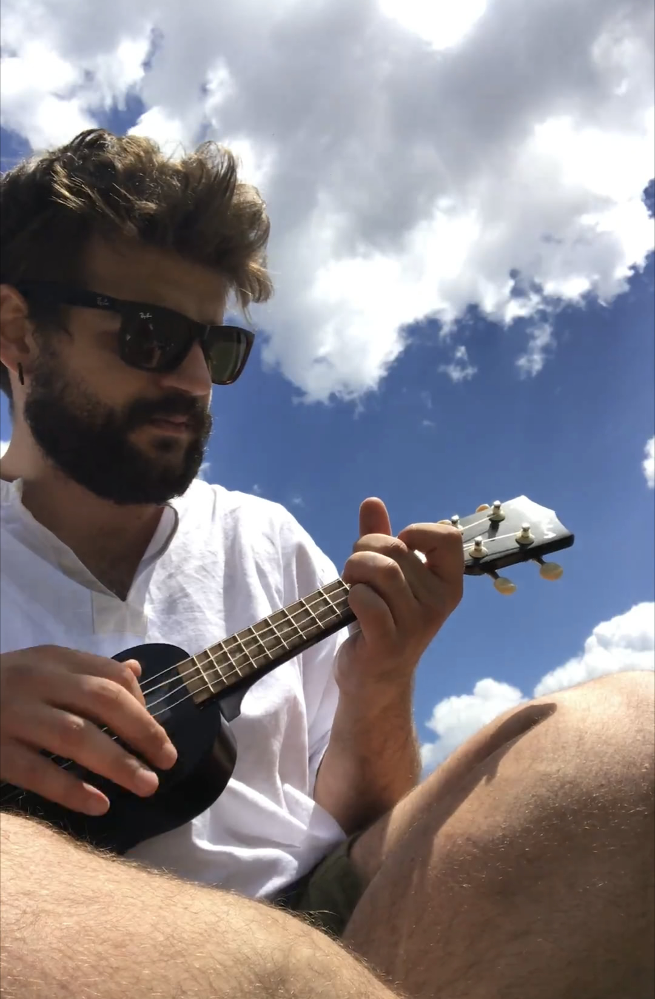

Denisa is a doctor, currently working in Baden-Württemberg. She will soon start a new job at the DRK Kliniken Köpenick.
Fabian is a Senior Software Engineer. He currently works for a consulting firm and gets to enjoy working on different contracting positions for companies in Berlin. Currently he is part of the mobile development team at ImmoScout24!
Originally, we come from the colorful and sunny city of Tirana, Albania.
We are both EU Blue card holders and Denisa will be eligible for a permanent residency in March 2022.
We have known each other since high-school and we currently live together in Reutlingen, Germany. We have both visited Berlin many times before and it is our favorite place in the world.
We will be moving to Berlin on April 1st and are looking for a place long-term we can call home.
Denisa ist Ärztin von Beruf und arbeitet derzeit in Baden-Württemberg. Sie wird bald eine neue Stelle bei den DRK Kliniken Köpenick antreten.
Fabian ist Senior Software Engineer. Derzeit arbeitet er für eine Software-Consulting Firma und genießt die Arbeit in verschiedenen Contracting-Positionen für Unternehmen in Berlin. Aktuell ist er Teil des Mobile Development Teams bei ImmoScout24!
Ursprünglich kommen wir aus der bunten und sonnigen Stadt Tirana, Albanien.
Wir besitzen beide eine Blaue Karte EU. Denisa hat sogar ab März 2022 Anspruch auf eine unbefristete Niederlassungserlaubnis.
Wir kennen uns seit dem Gymnasium und leben derzeit zusammen in Reutlingen, Deutschland. Wir haben beide schon oft Berlin besucht und es ist unser Lieblingsort auf der Welt.
Wir ziehen zum 01.04.2022 nach Berlin und suchen langfristig eine Wohnung, die wir Zuhause nennen können.
 


We are a young couple who enjoy all the things we do together. We love cooking and travelling the world together. We also enjoy just sitting in the couch after a long day at work and enjoying a movie while having some popcorn.
Denisa's favourite activity is sleeping by the seaside. Her superpower is completely ignoring the blazing sun of Spain in the middle of August while having a peaceful nap.
Fabian has always tried to be a musician since he was a teenager. He loves playing the ukulele, even though the tunes coming out of it are not always worth listenening to.
Wir sind ein junges Pärchen und verbringen gerne Zeit miteinander. Wir lieben es gemeinsam zu kochen und die Welt zu bereisen. Wir genießen es auch, nach einem langen Arbeitstag einfach nur auf der Couch zu sitzen, einen guten Film sehen mit salzigem Popcorn dazu.
Denisa's "Lieblingsaktivität" ist Schlafen am Strand. Ihre Superkraft ist es, Mitte August die pralle spanische Sonne komplett ignorieren zu können, während sie ein friedliches Nickerchen macht.
Fabian hat sich schon als kleiner Junge als Musiker versucht. Er spielt gerne Ukulele, auch wenn seine Melodien nicht immer wunderschön sind.

Denisa is an essential worker. She moved to work as a doctor in Germany just before the pandemic started and has been in the front lines ever since. She has dealt with numerous COVID outbreaks at her hospital.
Fabian has worked for three different German companies in his career. Through his work he has worked on various products which have contributed in the digitalization and simplification of beauracracy, helping studens find short term jobs and helping people in their apartment search. He actively contributes to the creation of a sustainable and secure digital infrastructure in Germany.
Denisa arbeitet in einem systemrelevanten Beruf. Sie zog kurz vor Beginn der Pandemie nach Deutschland und arbeitet seitdem als Ärztin an der Frontlinie. Sie hat in ihrer Klinik zahlreiche COVID-Ausbrüche behandelt.
Fabian hat in seiner Karriere für drei verschiedene deutsche Unternehmen gearbeitet. Durch seine Arbeit hat er an verschiedenen Produkten gearbeitet, die zur Digitalisierung und Vereinfachung der Bürokratie beigetragen haben, Studenten dabei geholfen haben, kurzfristige Jobs zu finden und Menschen die Wohnungssuche erleichtert. Er trägt aktiv zur Schaffung einer nachhaltigen und sicheren digitalen Infrastruktur in Deutschland bei.